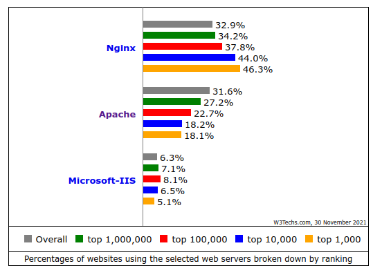

6.3. Configuración HTTP
Los servidores web son los encargados de servir a los navegadores los contenidos solicitados. Actualmente 3 son los principales servidores web que tienen un uso más extendido:
Apache: Servidor Open Source disponible en sistemas Unix, Microsoft y Apple
NGINX: Software libre y de código abierto, para Linux, FreeBSD y Windows, pensado para mejorar el rendimiento de apache.
Internet Information Services(IIS): Propiedad de Microsoft, únicamente para sistemas Windows.
Puedes encontrar una comparativa muy interesante entre la utilización de los distintos servidores y otras tecnologías relacionadas en la web de W3Techs.
{kind=link}
En cualquiera de los servidores que utilicemos debemos prestar especial atención a los siguientes elementos o propiedades:
Instalación y configuración del servicio sobre el SO e Infraestructura(MV, contenedor, cloud…) correspondiente.
- Directorio/s donde se ubicarán el/los sitio/s web que administremos.
Permisos adecuados (chown/chmod) → $¡¡¡¡¡¡¡¡sudo chmod -R 777!!!!)
Espacio disponible
Seguridad (Backups, redundancia, …)
- Instalación módulos necesarios:
Lenguajes del lado servidor( PHP, ASP..)
Conectores con SGBD(Oracle,Dbase,MySql..)
Autenticación
Control de acceso
etc…
Configuración para conexiones seguras(encriptadas) mediante HTTPS.
- Varios sitios en un mismo servidor (VIRTUAL HOST).
IP
Nombre → Configuración DNS
Puerto
- Acceso remoto a la gestión de los archivos en el servidor
FTP
WebDAV.
Registro de sucesos en el servidor (LOG)
Seguramente se trata del servidor web más conocido. Una de sus ventajas es la calidad de su documentación oficial,
en la cual podemos encontrar información muy completa y tutoriales de creación de determinados escenarios. Disponible para Linux, Windows, MAC. ¿Instalación de un panel de administración para facilitar administración? → p.e Webmin Comprobamos los módulos instalados/activos. Opciones por directorio. Directivas .htaccess Permisos de acceso. Espacios de usuario Indizado de directorios para ver su contenido como una carpeta. Hosting virtuales. Importante ¿Sabrías realizar la configuración básica de un servidor Apache? Instala el servicio en una MV Ubuntu Server. Comprueba su acceso con los distintos modos de funcionamiento de la red en VirtualBox. Lista los módulos instalados en apache. Instala alguno más. Configura tu servidor para que, por ejemplo, sirva los sitios prueba1.com y prueba2.com. Permite el indizado de directorio en algún caso concreto. Activa el acceso con identificación.
NGINX, pronunciado en inglés como «engine-ex», es un famoso software de servidor web de código abierto 1.
En su versión inicial, funcionaba en servidores web HTTP.
Sin embargo, hoy en día también sirve como proxy inverso, balanceador de carga HTTP y proxy de correo electrónico para IMAP, POP3 y SMTP.
La aparición de este servidor fue provocada por la búsqueda de un servicio web que
mejorara las prestaciones de Apache en páginas con una alta tasa de accesibilidad (en el orden de miles de conexiones simultáneas).
En realidad la configuración de un servidor y otro guardan ciertas semejanzas.
Al igual que en el caso de Apache, puedes encontrar muchísima ayuda en la web2. Puedes encontrar, por ejemplo:
 En el siguiente documento puedes encontrar un manual completo de como realizar la configuración básica de algunos servidores web.
En el siguiente documento puedes encontrar un manual completo de como realizar la configuración básica de algunos servidores web.
6.3.1. Apache
6.3.2. NginX
 Un ejemplo de fichero de configuración lo puedes ver en el siguiente enlace.
Un ejemplo de fichero de configuración lo puedes ver en el siguiente enlace.
-
Fuente: ¿Qué es NGINX y cómo funciona? ↩
-
Documentación oficial: https://nginx.org/en/docs/ ↩